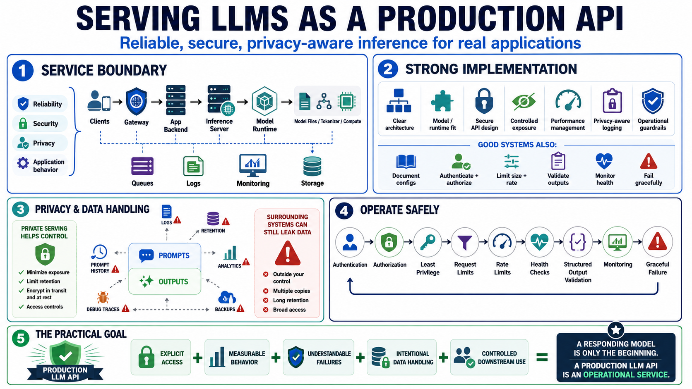

Course Summary and Key Takeaways
Connecting to LMS... Progress: in progress

Narration
Serving LLMs over APIs turns model inference into an operational service. The model becomes one component inside an architecture that includes clients, gateways, backends, inference servers, runtimes, model files, tokenizers, compute resources, queues, logs, monitoring, and storage. The service boundary is where reliability, security, privacy, and application behavior meet.
Strong implementations combine clear architecture, suitable model and runtime choices, secure API design, controlled exposure, performance management, privacy-aware logging, and operational guardrails. They document working configurations, define authentication and authorization, limit request size and rate, validate structured output, monitor health, and handle failure gracefully.
Privacy and data handling are central because prompts and outputs can contain sensitive information. Logging, retention, analytics, prompt history, backups, and debug traces should be designed deliberately. Local or private serving can improve control, but only if the surrounding service does not create new data leaks or access paths.
The practical goal is reliable, observable, least-privileged, privacy-aware inference that applications can use safely. A model that responds is only the beginning. A production-quality LLM API makes access explicit, behavior measurable, failures understandable, data handling intentional, and downstream use controlled enough for real systems.